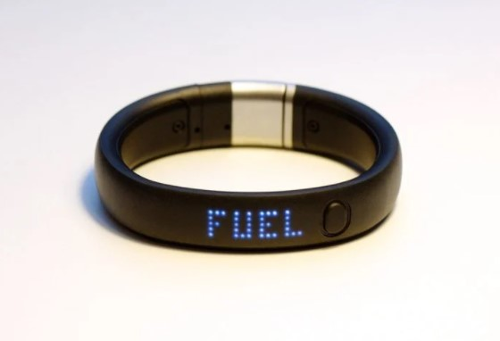

Let’s create new senses for ourselves! Leverage Neosensory’s Buzz haptic wristband and Edge Impulse’s machine learning platform to create powerful new sensory perceptions.
Build applications on any BLE-enabled platform, whether it’s a mobile phone or an Arduino to stream and encode sensory information on Buzz. Whether you want to feel sensor data about the health of your beehives, sense the temperature of surrounding objects, or feel satellites flying overhead, the sky’s not even the limit!
Buzz runs an algorithm for converting sound from the environment to a vibrational representation around the wrist using a built-in microphone—an application primarily useful for those who are deaf, those who want to maintain acoustic environmental awareness while wearing hearing protection or headphones, and beyond.
You could classify the emotion of incoming speech sound and convey it as a haptic aid for people with autismclassify animal calls and let users feel their sounds when walking through different environments, build an app that creates a companion tactile experience when a parent is reading a story to a child, recognize yoga poses and help yogis improve their posture, and beyond.
Submissions to this Challenge must be received by 11:59 PM PT, January 15, 2021.
Source: Hackster.io